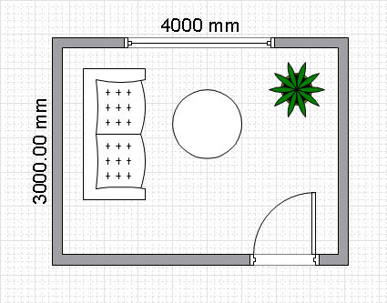

TechSummit 2026 este cel mai mare eveniment IT din România, care reunește peste 2000 de profesioniști din domeniul tehnologiei informației. Pe parcursul a trei zile intensive, participanții vor avea ocazia să exploreze cele mai noi tendințe și inovații din industrie.
Evenimentul va acoperi teme precum inteligența artificială, cloud computing, cybersecurity, și blockchain. Experți internaționali vor prezenta studii de caz și demonstrații live ale celor mai avansate tecnologii.
Nu rata șansa de a face networking cu lideri din industrie și de a descoperi oportunități de carieră la companiile tech de top!
Faceți click pe zonele din plan pentru a afla mai multe detalii

Sala principală cu capacitate de 1000 de locuri este locul unde se vor desfășura prezentările keynote ale conferinței. Echipată cu tehnologie audio-video de ultimă generație, această sală va găzdui cele mai importante prezentări ale evenimentului.
În zona expozanților veți întâlni peste 50 de companii tech din România și străinătate. Este locul perfect pentru a descoperi cele mai noi produse și servicii, pentru a face networking și pentru a explora oportunități de carieră.
Patru săli dedicate workshop-urilor hands-on unde veți putea învăța direct de la experți. Workshop-urile acoperă o gamă largă de subiecte, de la dezvoltare software până la securitate cibernetică și machine learning.